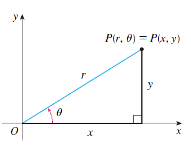
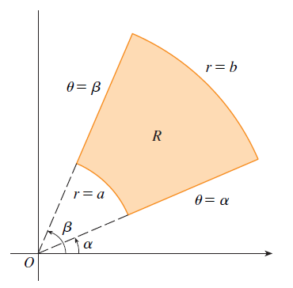

PARTE 3 · AULAS 36–38
Integrais duplas em coordenadas polares
Transformação polar, elemento de área, descrição de regiões circulares e área de superfícies.
1. Transformação
\[x=r\cos\theta.\]
\[y=r\sin\theta.\]
\[x^2+y^2=r^2.\]

2. Elemento de área
\[dA=r\,dr\,d\theta.\]
Atenção. O fator \(r\) é o Jacobiano da transformação e não pode ser omitido.
3. Integral em polares
\[\iint_Df(x,y)\,dA=\int_\alpha^\beta\int_{r_1(\theta)}^{r_2(\theta)}f(r\cos\theta,r\sin\theta)\,r\,dr\,d\theta.\]

Exemplo resolvido — área do disco.
\[0\leq r\leq R.\]
\[0\leq\theta\leq2\pi.\]
\[A=\int_0^{2\pi}\int_0^Rr\,dr\,d\theta.\]
\[A=\pi R^2.\]
4. Área de superfície
\[A(S)=\iint_D\sqrt{1+[f_x]^2+[f_y]^2}\,dA.\]
Visualização no GeoGebra 3D
Abrir GeoGebra 3D ↗Abra o ambiente 3D para explorar geometricamente os objetos relacionados a este conteúdo.
Material organizado a partir das aulas da GCT054 e da bibliografia indicada no Plano de Ensino, especialmente Stewart (2014), Anton, Bivens e Davis (2014) e Thomas, Weir e Hass (2013).